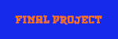

| |
|
 | |
|
|---|
Games are something that most people enjoy playing for the most part. A “game” comes in many different shapes and forms from the board game Monopoly, to team games like kickball, to a first person shooter or FPS like the Borderlands series. The game could be as simple as pong or as difficult as any AAA game but if it captures the targeted audience then it is a successful game. When you first start out in the game you will first see the starting screen or splash scene of the game. This tells you the name of the game, how to play it, and gives you two options between characters and prompts you to click on one to begin the game. Once clicking on a character, you will be introduced to the game scene where you will see a pause button, resume button, the bitmoji, the Starky seeds enemies coming at you from the right, and spikes above the bitmoji. As said the goal of the game is to avoid the starky seeds because if you don't then this will happen. To avoid this, use your spacebar to jump over the starky seeds but if you jump too high then you will get hit by the spikes so make sure to time your jumps but don't jump too high and you will be good and will beat this game easily. Keep in mind, this game has some inspiration from flappy bird so make to be precise with your jumps